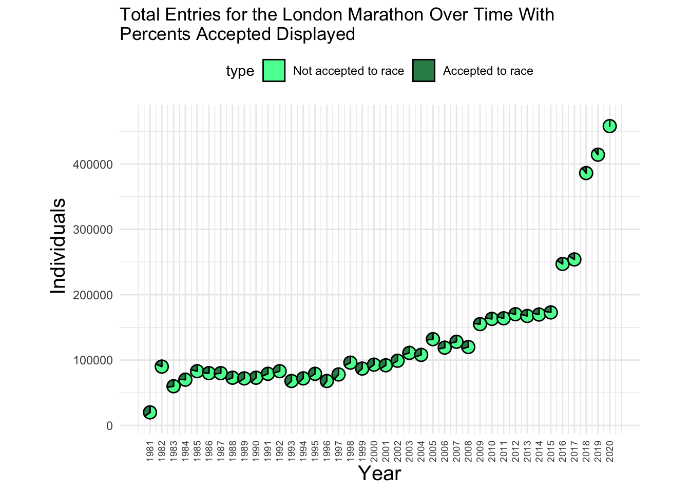
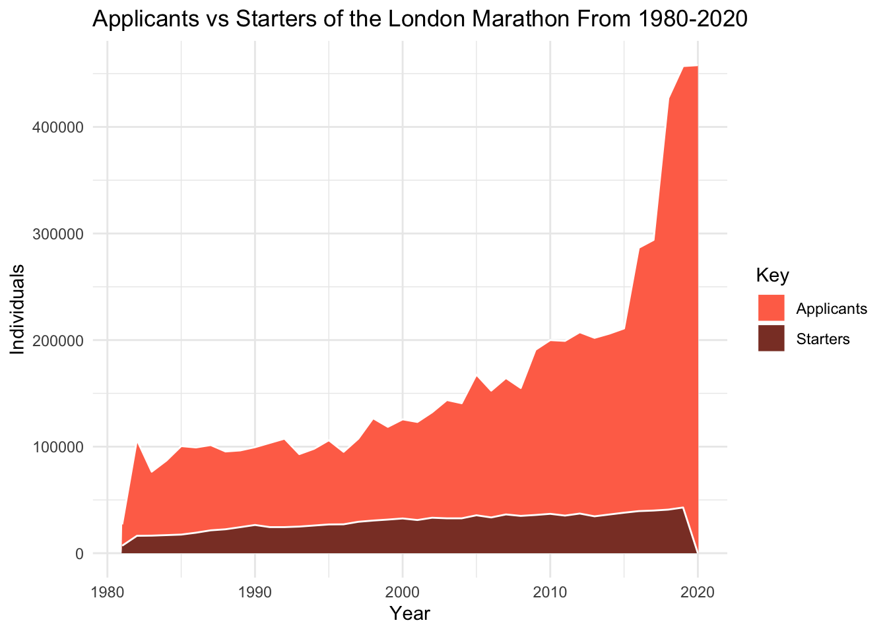
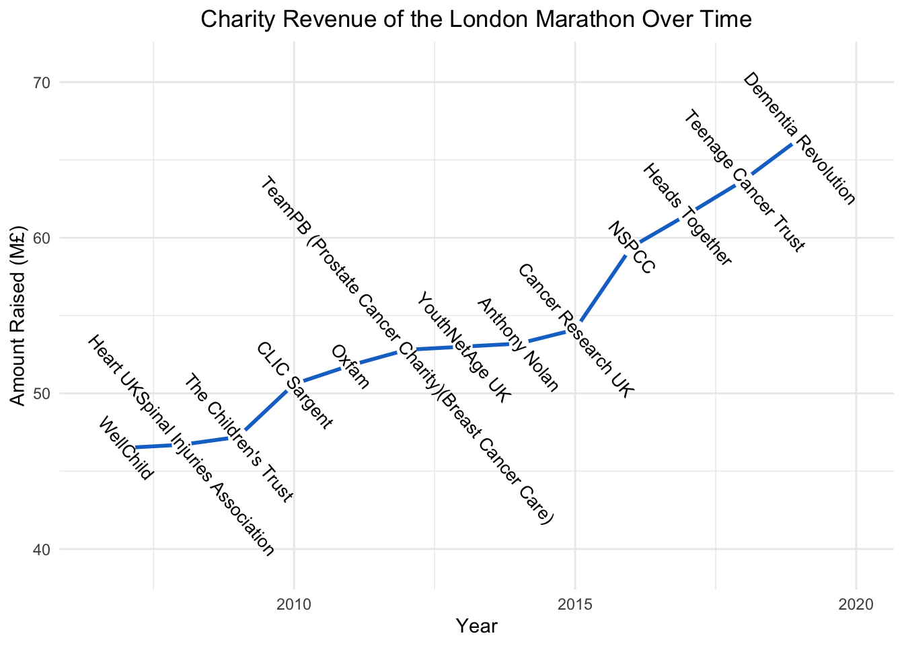
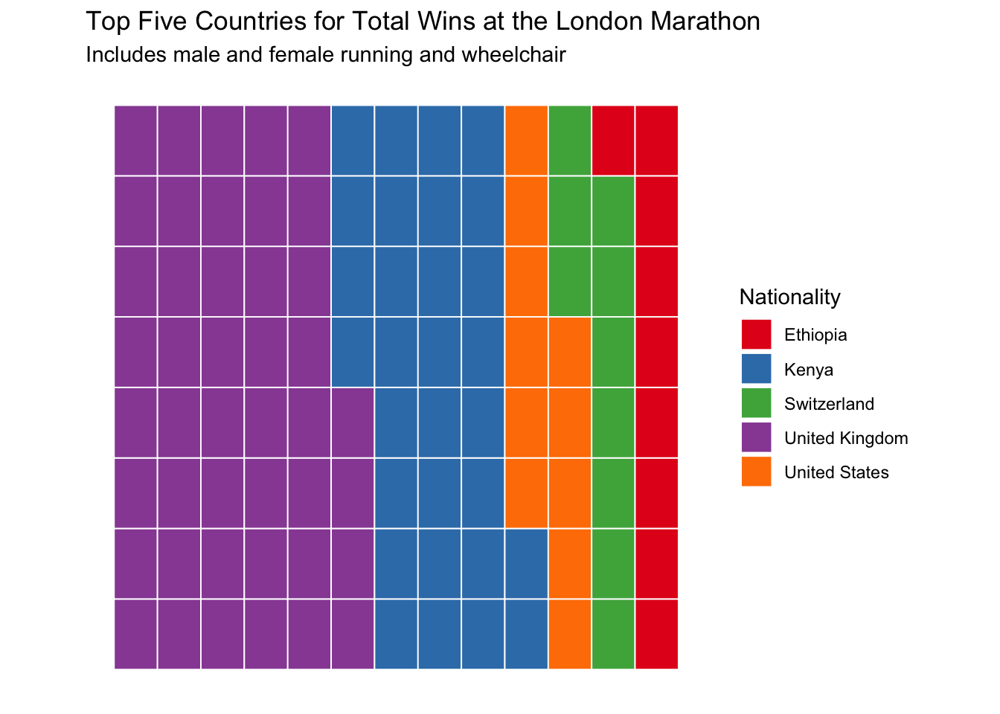

I chose two data sets from the same post on ‘data for science’. These were both about the london marathon over a period of about 40 years. Data included winners, times, nationalities, money raised, charity sponsors, entries, accepted entries, starters, finishers and race cats.
The first graph I made was a scatterpie attempt, using it to show how a proportion of a changing whole changes over time.
library(patchwork)
library(tidyverse)## ── Attaching core tidyverse packages ──────────────────────── tidyverse 2.0.0 ──
## ✔ dplyr 1.1.4 ✔ readr 2.1.5
## ✔ forcats 1.0.0 ✔ stringr 1.5.1
## ✔ ggplot2 3.5.1 ✔ tibble 3.2.1
## ✔ lubridate 1.9.3 ✔ tidyr 1.3.1
## ✔ purrr 1.0.2
## ── Conflicts ────────────────────────────────────────── tidyverse_conflicts() ──
## ✖ dplyr::filter() masks stats::filter()
## ✖ dplyr::lag() masks stats::lag()
## ℹ Use the conflicted package (<http://conflicted.r-lib.org/>) to force all conflicts to become errorslibrary(ggridges)
library(ggbeeswarm)
library(GGally)## Registered S3 method overwritten by 'GGally':
## method from
## +.gg ggplot2library(ggpie)
library(ggmosaic)##
## Attaching package: 'ggmosaic'
##
## The following object is masked from 'package:GGally':
##
## happylibrary(scatterpie)## scatterpie v0.2.4 Learn more at https://yulab-smu.top/library(waffle)
library(DescTools)
library(treemap)data <- read.csv("london_marathon copy.csv")
winners <- read.csv("winners copy.csv")
data <- filter(data, !is.na(Starters))
data <- mutate(data, Index = seq(1:nrow(data)))
data <- mutate(data, Counter = Index*18000)
data <- mutate(data, DNS = Applicants - Starters)
options(scipen=1000000)
p1 <- ggplot(data=data) +
scatterpie::geom_scatterpie(
aes(x=Counter, y=Applicants, group = Index),
pie_scale=0.7,
cols=c("DNS", "Starters")) +
coord_equal() +
theme_minimal() +
scale_fill_manual(values=c("seagreen1","seagreen4"), labels = c("Not accepted to race","Accepted to race")) +
scale_x_continuous(labels = unique(data$Year), breaks = unique(data$Counter)) +
theme(axis.text.x = element_text(angle = 90, vjust = 0.5, hjust=1, size = 7), legend.position = "top", title = element_text(hjust=-1), axis.title.x = element_text(size = 15, hjust = 0.5), axis.title.y = element_text(size = 15, hjust = 0.6)) +
labs(title = str_wrap("Total Entries for the London Marathon Over Time With Percents Accepted Displayed",60), y = "Individuals", x = "Year")
p1
The second plot I created was a different way to show the same thing as the first, essentially. This one is an area plot showing the drasticly growing applicant pool for the marathon vs the slowly growing accepted population. This gives a differetn visualiation of the proportion of accepted vs not.
a1 <- data%>%
select("Year", "Applicants")
a2 <- data%>%
select("Year", "Starters")
colnames(a1)[2] <- "Individuals"
colnames(a2)[2] <- "Individuals"
areadata <- rbind(a1,a2)
Key <- rep(c('Applicants','Starters'), each = 40)
areadata <- cbind(areadata,Key)
p2 <- ggplot(areadata) +
aes(x=Year, y=Individuals, group = Key, fill = Key) +
geom_area(color = "white") +
theme_minimal() +
labs(title = "Applicants vs Starters of the London Marathon From 1980-2020") +
scale_fill_manual(values = c("coral1","coral4"))
p2
The third graph I created was another series over time but this time I tried to be very creative with labeling the data. I wanted to show money raised for charity over time but also show which charity it was raised for. This could be done with color or shape mapping but that would result in a stupid amount of shapes/colors so I elected to overlay the labels onto the points and use a line plot to show the overall growth.
funds <- filter(data, !is.na(Raised))
funds <- mutate(funds, hjust = rep(0,1))
p3 <- ggplot(funds) +
aes(x=Year, y=Raised) +
geom_line(color = "dodgerblue3", size = 1) +
geom_point(size = 4.5, fill = "white", color = "white") +
geom_text(aes(label = Official.charity), angle = -50, size = 3.5, nudge_x = 0.02) + ylim(39,71) + xlim(2006.5,2020) + theme_minimal() +
labs(y = "Amount Raised (M£)") + ggtitle("Charity Revenue of the London Marathon Over Time") +
theme(plot.title = element_text(hjust = 0.5))## Warning: Using `size` aesthetic for lines was deprecated in ggplot2 3.4.0.
## ℹ Please use `linewidth` instead.
## This warning is displayed once every 8 hours.
## Call `lifecycle::last_lifecycle_warnings()` to see where this warning was
## generated.p3
The final graph I made I wanted to use some sort of categorical data instead of continuous again. I tried many options for charity funds and nationality wins and did not have much luck due to the high number of groups. That is how I settled on a top five style ranking but I didn’t want to settle for a boring bar graph. I tried circular a lot as well as doughnut but these were insanely diffifcult to work with so I decided to try one of the examples from class.
t <- data.frame(table(winners$Nationality))
t <- t[order(t$Freq, decreasing = T),]
t <- t[1:5,]
colnames(t)[1] <- "Nationality"
sum(t$Freq)## [1] 104p4 <- ggplot(data=t) +
aes(fill = Nationality, values = Freq) +
waffle::geom_waffle(n_rows = 8, size = 0.33, colour = "white") +
coord_equal() +
theme_mosaic() +
scale_fill_brewer(palette = "Set1") +
theme(axis.ticks = element_blank(), axis.text = element_blank()) +
labs(title = "Top Five Countries for Total Wins at the London Marathon", subtitle = "Includes male and female running and wheelchair")
p4